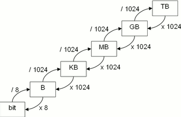

Explicación Asignatura
Los sistemas operativos son importantes saberlos utilizar ya que es donde se trabaja en los ordenadores, el apartado grafico, los comandos y todo lo que tenga que ver con ejecutar procesos se trabaja desde un sistema operativo, hay varrios sistemas, pero lo
Temas
Escalera de conversion
Las unidades de informacion en la informatica se calculan en bits, es la unidad mas pequeña posible, se dividen en 0 y 1, un bit puede ser un 0 o un 1.
Para calcualar cuantos bits es un byte hay que dividilo 8, ya que un byte son 8 bits.
Como pasamos de byts a Kb,MB,GB,TB?
Para pasar de byts a kB hay que dividir por 1024, cuando queremos subir de unidades hay que dividir, pero cuando queremos bajar las unidades por ejemplo 4MB a KB hay que multiplicar 1024, el ejemplo seria 4*1024=4.096, Una referencia seria esta esclaera de conversion,
Numeros Binarios
En la informatica se utilizan los numeros binarios, que son el 0 y el 1
Los numeros binarios son potencias de 2, sabiendo esto podemos hacer la tabla que se usa para todo, para ips y mascaras.
128 64 32 16 8 4 2 1 esta es la tabla que mas se utiliza para pasar de numeros decimales a binarios,
0 0 0 1 1 0 1 1 este numero si lo sumamos nos daria 27 en numero decimal.
Maquinas Virtuales
En sistemas operativos vas a utilizar las maquinas virtuales, asique vamos a dar los primeros pasos para que puedas entender como funcionan las maquinas virtuales y el propio virtual box.